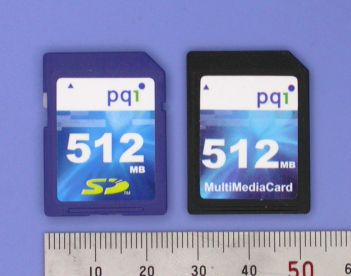
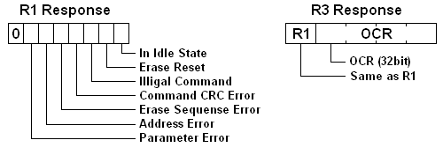
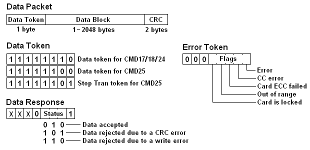
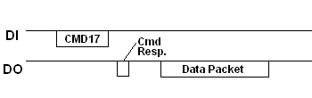
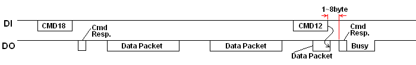
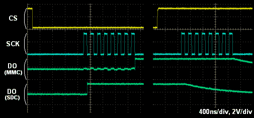
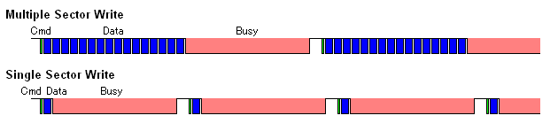

MMCの使いかた
更新: 2010. 11. 3

現在広く普及しているメモリ・カードのひとつに、SDメモリ・カード(Secure Digital Memory Card)があります。SDメモリ・カード(以下SDCと表記)は、マルチメディア・カード(Multi-Media Card、以下MMCと表記)互換のシステムとして開発されたもので、SDC対応機器はいくつかの考慮だけでMMCを同じソケットで使うことができます。さらにMMCの拡張仕様としてMMC plusというのもあり、同様にSDC対応機器で使えます。これらのメモリ・カードには、機能はそのままで外形だけ小型化されたバリエーションがあります。MMC/SDCは内部にマイクロコントローラを持ち、フラッシュ・メモリ制御(消去、書き込み、エラー制御や巡回処理)は内部で完結しています。データの読み書きは基本的にブロック(512バイト)単位となり、ドライバ・レベルから見てもハードディスクと変わるところはありません。ファイル・システムにはFATが採用されています。
ここでは、MMC/SDCを組み込みシステムで利用する際に最低限知っておくべき点や、いろいろ気づいた点などをコンパクトにまとめておきます。これからMMC/SDCを使ってみようとしている方の参考になれば幸いです。
端子配列
右の写真にMMCとSDCの端子部を示します。MMCは7接点、SDCはそれに2接点を追加した9接点となっています。このうち、電源がそれぞれ3接点を占めているので、有効信号線数はそれぞれ4本と6本ということになります。信号名からも分かるように、データ伝送はクロック同期シリアルで行われます。
動作電源電圧は、動作可能範囲を示すレジスタを読み出して確認することになっています。出回っているほとんど全てのMMC/SDCは2.7〜3.6Vの範囲で動作するので、その範囲の電源電圧に決め打ちしてもOKです。電源電流は読み書きのピーク時で数十mA流れるので、100mAは見ておいた方がよいでしょう。
SPIモード
SPIモードはMMC/SDCを簡単に使うために設定されたモードです。SPIモードの伝送プロトコルはネイティブ・モードよりも単純なので、マイコン内蔵のSPIポートまたはGPIOポートで容易に制御できます。単純な組み込みシステムではコストの点から専用ハードウェアを設けられないことも多いのですが、SPIモードで使用することにより廉価なシステムが実現できます。特に電子工作ではSPIモード以外を選択する理由はないといえるでしょう。SDCではSPI Mode 0準拠のタイミングで規定されています。MMCではラッチ、シフト共にクロックの立ち上がりで規定されていてSPIとは異なりますが、SPIモードではMode 0のタイミングで動作するようです。したがって、SPIポートの設定はMode 0(CPHA=0, CPOL=0)とするのが適当です(Mode 3でも多くは動作が可能)。
コマンドとレスポンス
SPIモードではデータの入出力方向は固定され、バイト指向のシリアル通信となります。コマンド・フレームは6バイトの固定長で、次のようなフォーマットで伝送されます。コマンドを送るとそれに対するレスポンス(R1、R2またはR3)が返って来るので、ポーリングしながら待ちます。コマンド応答時間(NCR)は、0〜8バイト(SDC)または、1〜8バイト(MMC)となっています。一つのトランザクション(コマンド送信開始からレスポンス、データ転送(あるならば))の間はCSをアサートに保持しておかなければなりません。

SPIコマンド・セット
それぞれのコマンドはCMD<n>といった略号で表記されます。nはそのコマンドのインデックス番号を示し、0〜63です。ここでは、通常の読み書きで使用されるコマンドを中心に載せておきます。全コマンドの詳細については、MMC/SDCそれぞれのスペック・シートを参照してください。
コマンド
インデックス | 引数 | 応答 | データ
転送 | 省略形 | 説明 |
|---|
| CMD0 | 無し(0) | R1 | 無し | GO_IDLE_STATE | ソフトウェアリセット。 |
| CMD1 | 無し(0) | R1 | 無し | SEND_OP_COND | 初期化開始。 |
| ACMD41(*1) | *2 | R1 | 無し | APP_SEND_OP_COND | SDC専用。初期化開始。 |
| CMD8 | *3 | R7 | なし | SEND_IF_COND | SDC V2専用。動作電圧確認。 |
| CMD9 | 無し(0) | R1 | あり | SEND_CSD | CSD読み出し。 |
| CMD10 | 無し(0) | R1 | あり | SEND_CID | CID読み出し。 |
| CMD12 | 無し(0) | R1b | 無し | STOP_TRANSMISSION | リード動作停止。 |
| CMD16 | ブロック長[31:0] | R1 | 無し | SET_BLOCKLEN | R/Wブロック長変更。 |
| CMD17 | アドレス[31:0] | R1 | あり | READ_SINGLE_BLOCK | シングルブロック読み出し。 |
| CMD18 | アドレス[31:0] | R1 | あり | READ_MULTIPLE_BLOCK | マルチブロック読み出し。 |
| CMD23 | ブロック数[15:0] | R1 | 無し | SET_BLOCK_COUNT | MMC専用。次のマルチブロック読み出し/書き込
みコマンドでの転送ブロック数を設定。 |
| ACMD23(*1) | ブロック数[22:0] | R1 | 無し | SET_WR_BLOCK_ERASE_COUNT | SDC専用。次のマルチブロック書き込みコマンド
でのプレ消去ブロック数を設定。 |
| CMD24 | アドレス[31:0] | R1 | あり | WRITE_BLOCK | シングルブロック書き込み。 |
| CMD25 | アドレス[31:0] | R1 | あり | WRITE_MULTIPLE_BLOCK | マルチブロック書き込み。 |
| CMD55(*1) | 無し(0) | R1 | 無し | APP_CMD | アプリケーション特化コマンド。 |
| CMD58 | 無し(0) | R3 | 無し | READ_OCR | OCR読み出し。 |
*1: ACMD<n>とは、CMD55,CMD<n>のコマンドシーケンスを意味する。
*2: 予約(0)[31], HCS[30], 予約(0)[29:0]
*3: 予約(0)[31:12], Supply Voltage(1)[11:8], Check Pattern(0xAA)[7:0] |
SPIレスポンス

コマンドに対するカードのレスポンスには、コマンドによりR1、R2、R3、R7の4タイプがあります。ここではR1とR3だけ説明しておきます。ほとんどのコマンドでは1バイト長のR1が返ります。R1のビット・フィールドは右の図に示すようになっていて、0x00で正常終了となります。何らかのエラーがあった場合は対応するビットが立ちます。R3/R7では、R1レスポンスに続いて32ビットの戻り値が返されます。
処理に時間のかかるコマンドでは、R1bレスポンスとなっています。R1bではR1レスポンスに続いてDO出力にビジー・フラグ(連続したLowレベル)が出力されます。内部処理が終わって0xFFが受信されるまでホストはポーリングしながら待ちます。
SPIモード初期化手順
MMC/SDCは電源ONにより、まずそれ本来のネイティブな動作モードになります。SPIモードに初期化するには次の手順を踏む必要があります。(フロー・チャート)
電源ONまたはカード挿入後
電源投入またはカード挿入により、カードはそれ本来のネイティブな動作モード(SPIモードでない)に入ります。電源が安定またはカード挿入を検出したら1ms以上待って、DI,CSをHighにしてSCLKを74クロック以上入れるとコマンドを受け付ける準備ができます。
ソフトウェア・リセット
SPIポートの伝送クロック・レートを100kHz〜400kHzに設定します。CS信号をアサート(Low)してCMD0でソフトウェア・リセットをかけます。CMD0を受信したときカードはCS信号をサンプルし、Lowレベルの場合はSPIモードに入ります。CMD0を送るときはまだSPIモードではないので、コマンド・パケットのCRCは有効な値でなければなりません。SPIモードに入るとCRCチェック機能はDisableになるので、コマンド・パケット送信ルーチンではCMD0とCMD8にだけ有効なCRCバイトでハード・コーディングしておいて良いでしょう。リセットが正常にかかるとカードはアイドル状態に入り、In Idle Stateビットの立ったR1レスポンス(0x01)が返ります。この状態ではまだ読み書き系コマンドは使えません。なお、SPIモードに入った後もCMD59でCRCを有効にすることもできます(普通しないでしょうけど)。
初期化の開始と完了待ち
CMD1を送るとカードは初期化を開始します。初期化の終了をポーリングするため、CMD1を繰り返し送信してレスポンスを調べます。初期化が終了すると、In Idle Stateビットがクリアされた(0x00)レスポンスが返ります。カードによっては初期化に数百ms以上かかることがあるので、タイムアウトには余裕を持っておくべきです。この処理が終了した時点から通常の読み書き動作が可能になります。
SDCではCMD1の代わりにACMD41での初期化が推奨されています。SDCとMMC両方に対応する場合は、先にACMD41を送ってみてrejectされたらMMCと判断してCMD1で初期化を行うのが理想的です。
最後にOCR、CSDを読み込んで各種パラメータを確認します。OCRはカードの電源電圧範囲を示しているので、そのシステムで使用可能かチェックします。もしも範囲外の場合は初期化失敗とします。CSD内のTRAN_SPEEDフィールドはカードの最大動作周波数を示しているので、これに従いSPIポートを再設定します(MMCでは20MHz、SDCでは25MHzが多い)。SPIモードの場合は、速度を制限する状態(OD駆動)が無いので、クロック切り替えなしで最初から20/25MHzでもOKです。2Gバイトのメモリ・カードでは、ブロック・サイズの初期値が512以外の場合があるので、CMD16でブロック・サイズを512バイトに再設定しておきます。
SDC Ver2と大容量SDCの対応方法
CMD0でカードがアイドル状態に入ったら、初期化開始の前にCMD8を送ります(引数は0x1AAで、CRCは有効でなければなりません)。CMD8がrejectされたらSDC V1またはMMCなので、前項の処理で初期化します。CMD8が受け付けられると、R7(R1+32ビットの戻り値)が返ります。戻り値の下位12ビットが0x1AAならそのカードはSDC V2で、2.7V〜3.6Vで動作が可能なことを示しています。それ以外の値の場合、そのカードは使用不可なので初期化失敗とします。続いて、ACMD41(引数のHCSビットを立てる)を使って初期化を開始します。初期化が完了したらOCRを読み出します。OCR中のCCS[30]が1なら、そのカードはブロック・アドレッシング方式(ブロック・サイズは512バイト固定)なので、次のセクションで説明するリード/ライト動作ではバイト・アドレスの代わりにブロック・アドレスを使用します。
データ転送
データ・パケットとレスポンス

データ転送を伴うトランザクションでは、コマンド・レスポンスに続いてデータブロックが授受されます。データブロックはトークン、データ・ブロック、CRCから成るデータ・パケットとして伝送されます。データ・パケットは右の図に示すフォーマットとなっていて、トークンは3通りあります。このうち、マルチブロック・ライト終了を示すStop Tranトークンはデータ部とCRCを持たず単独で使われます。
シングル・ブロック・リード

読み出し書き込みコマンドの引数はバイトまたはブロック単位の開始アドレスです。上位レイヤにより指定されたアドレスは、そのカードのアドレッシング・モードに応じて適切にスケーリングする必要があります。読み出しコマンドが受け付けられた後、内部で読み出し動作が行われデータ・パケットが送られて来るので、ポーリングしながら待ちます。ホストはデータ・トークンを確認したら、続くデータ・ブロックとCRCを取り込みます。ブロック・サイズはデフォルトでは512バイトになっています(CMD16で変更することもできます)。読み出し中に何らかのエラーが発生したときは、データ・パケットの代わりに1バイトのエラー・トークンが返ります。
マルチ・ブロック・リード

指定アドレスを先頭にした複数のデータ・ブロックが転送されます。MMCでは、転送ブロック数を指定せずにマルチ・ブロック・リードを開始(open-ended multiple block read)した場合、またSDCでは常時、必要なブロック数を転送した後、CMD12で読み出し動作を止めなければなりません。このとき、CMD12の直後に返る1バイトは無効なので、そのバイトを読み捨ててからCMD12のレスポンスを受信します。何らかのエラーが発生したときも同様にCMD12でリード動作を止めます。
シングル・ブロック・ライト

書き込みコマンドが受け付けられたら、データ・パケットを送信します。コマンド・レスポンスとデータ・パケットの間は1バイト以上空けなければなりません。データ・パケットのCRCはチェックされませんが、フィールドとして必要なので適当なデータを送ります。データ・パケットを送ると直後にデータ・レスポンスが返るので、正常に転送されたかどうか確認できます。データ・レスポンスの後はビジーフラグが出力されるので、ポーリングしながら書き込み動作終了を待ちます。
原則として、ひとつのトランザクションの間はCSをアサートに保たなければなりませんが、カードがビジー状態の間は、CSをデアサートしてSPIバスを解放することができます。次にCSをアサートしたときまだビジー状態ならカードは再びDOをLowに駆動します。そこで、ビジー・チェックを先チェック(コマンドおよびデータブロック送信の直前にビジー・チェックを入れる)にすると転送直後にCPUを解放でき、CPU時間を有効に使えます。なお、内部で書き込み処理が開始されるのは、データ・レスポンスのあと1バイト分クロックが走ってからなので、先チェックの場合は注意が必要です。追加クロックのときのCSの状態は問われないので、後で説明するバス解放処理をもって追加クロックとすることもできます。
マルチ・ブロック・ライト

指定アドレスを先頭にした複数のデータ・ブロックが転送されます。直前に転送ブロック数を指定せずにマルチ・ブロック・ライトを開始(open-ended multiple block write)した場合、必要なブロック数を転送した後、転送終了を示すStop Tranトークンを送ってデータ転送を終了させます。Stop Tranトークンに対するビジー・フラグは、1バイト置いて出力されます。なお、SDCでは pre-defined, open-endedにかかわらず、常にStop Tranトークンが必要です。
CSD,CIDの読み出し
これらの読み出しは、シングル・ブロック・リードと同じで、読み出しコマンドを送るとそれぞれデータ・パケット(データ部16バイト)としてホストに送信されます。CSD,CIDおよびOCRの詳細については、MMC/SDCのスペックシートを参照してください。
端子処理と活線挿抜

タイミングによってフローティング状態になる信号線は、プル・アップやプル・ダウンで適切にレベル固定しておくべきです。DI、DOのアイドル状態はHighレベルなので、プルアップが適当です。MMC/SDCの規格によると、これらの端子は50k〜100kΩでプルアップすべしとなっています。クロック信号については常にホストから駆動されるので処理は明記されていませんが、浮くタイミングがあるならその定常値、つまりプル・ダウンにするべきでしょう。
電源ON状態でカードの抜き差し(活線挿抜)をするアプリケーションでは、電源回路にもある程度の考慮をしないと誤動作に悩まされることになります。たとえば、何も考えずにシステム電源をソケットに接続すると、カードを挿入した瞬間カードに内蔵されているチップコンへの突入電流でシステム電源がディップします。右の図のAがそれの様子で、600mVの電源ディップが発生しています。これはBODをトリガさせるには十分なレベルです。Bはその対策としてインダクタを入れて突入電流を抑制したものです。ディップは200mV程度となり、何とか許容範囲に入りました。また力業で大容量OSコンを入れば、ほぼ問題のないレベルになります。ただし、OSコンはLDOを発振させる場合があるので注意が必要です。
バス接続の注意点

SPIではCS信号により個々のデバイスが選択され、複数のデバイスをSPIにバス結線することができます。普通のSPIデバイスなら、CS信号によって非同期的にDO信号を駆動/解放しますが、MMC/SDCの場合はこのタイミングが少し異なり、SCLKに同期して駆動/解放が行われます。このため、MMC/SDCと他のSPIデバイスをバス接続したとき、DO出力が衝突する可能性があります。右の図にMMC/SDCのDO駆動/解放のタイミング・チャートと波形を示します(DO信号は見やすいように1/2 Vddに吊ってあります)。このように、MMC/SDCに確実にDO信号を解放させるには、CSをHighにしたあと1バイト分クロックを送っておく必要があります。また、先にビジー・チェックを入れる場合も駆動開始の遅れに注意が必要です。
書き込み速度の最適化
MMC/SDCのほとんどはメモリ・アレーにNAND型フラッシュ・メモリを使用しています。NAND型はビット単価が安く、大量のデータの書き込み/読み出しを高速に行えるのが特徴です。しかしその反面、データの一部の書き換えは苦手というデメリットがあります。元々フラッシュ・メモリというのは、データを書き込む前に古いデータを消去する必要があり、また消去の最小単位(消去ブロックという)は書き込みの単位よりもずっと大きくなります。NAND型の場合、書き込み/消去のブロック・サイズは512B/16KBで、最近の大容量カードではラージ・ブロック(2KB/128KB)のメモリ・チップも使われています。これは、1セクタ(512B)の書き換えであっても、カード内部ではそのセクタを含む消去ブロック全体(16KBまたは128KB)の読み出し/消去/書き込みが行われていることを意味します。
ベンチマークをとってみる
ここで、RAMの限られた組み込みシステムを想定して、チープな8bit MCU(ATmega64/9.2MHz)を使っていくつかのカードにファイルを読み書きする実験をしてみました。RAMサイズの都合から2KB単位でのwrite(), read()としています。その結果、128MB SDCでは Write: 77kB/秒、Read: 328kB/秒で、512MB SDCでは Write: 28kB/秒、Read: 234kB/秒、128MB MMCでは Write: 182kB/秒、Read: 312kB/秒となりました。
このように、512MB SDCの書き込み速度は128MB SDCの1/3という悲惨な結果になってしまいました。記録メディアは高密度になるほど速くなるものですが、メモリ・カードに限っては逆の傾向となることもあるのです。MMCについてはSDCの数倍とまずまずの速度のようです。今回ダメダメだったSDCですが、高速タイプを謳っているのもあるので、いろいろ試してみると面白いと思います。→その後いくつか試したところ、PQIのSDCはMMCと同等の書き込み性能を示しましたが、パナと東芝の標準タイプはチマチマ書きが苦手なようです。
消去ブロック・サイズの影響
さらに書き込み動作を詳しく調べるため、処理ルーチン内でデータ転送後のビジー時間(ポーリング回数)を出力しています。1行に複数の数値があるのは、マルチ・ブロック・ライトが行われている部分で、行頭から各データブロックのビジー時間で、最後がStopTranトークン後のビジー時間となります。
これらを比較してみたところ、128MBと512MBでは内部処理が異なるようで、128MB SDCではマルチブロック転送が終わる都度、512MB SDCではある程度バッファを持っているらしく、4KB溜まった時点で書き込み処理が行われているようです。このため単純な比較はできませんが、消去ブロック書き換え時間は128MB SDCでは3800、512MB SDCでは30000と見られ、約8倍の時間がかかっていることになります。このことから、テストした 128MB SDCはスモールブロックの、512MB SDCはラージブロックまたは多値記録のメモリ・チップが使われていることが推測できます。もちろん、後者の方が部分書き換えの効率は悪いです。なお、512MB SDCでは先頭の512KB分だけが何故か高速になっています。これはclose()時のFAT/ディレクトリ領域の書き戻し時間から分かります。もしかしたら、FAT領域となるメモリ先頭部分は何か特別な扱いになっているのかも知れません。
書き込み性能の改善策

さて、MMC/SDCの性能を最大限に引き出すためには、一度に書き込むセクタ数を可能な限り大きく(少なくとも消去ブロック単位)取ればいいということが分かりました。つまり、RAMをたくさん用意してfwrite()に大きなデータ・ブロックを渡すということです。ドライバ・レベルでは、カードがマルチ・ブロック・ライトを効率よく実行するため、書き込むセクタ数を予めカードに伝えておく必要があります(pre-defined multiple block writeという)。しかし、そのコマンドはMMCとSDCでは異なる(MMCではCMD23、SDCではACMD23)ので注意が必要です。まぁ、RAMが数KB程度のマイコンでは書き込み性能アップは諦めた方がいいでしょう。それよりも、高速なカードを選んで使う方が賢明といえます。
なお、カード出荷時はFATのデータ領域が消去ブロック境界にアライメントするように区画設定と論理フォーマットがされています。これをMMC/SDCの特性を考慮しないシステム(PC等)で不用意に区画設定や再フォーマットすると、この関係が崩れて効率が低下する場合があります。試しに512MB SDCをPCでFAT32フォーマットしてみたら、PCでのファイルコピー速度が数分の一に低下してしまいました。再フォーマットはMMC/SDC専用機器で行うのが良いようです。
MMC/SDCのライセンス
SD規格(SDメモリ、SDIO)はSDAが開発したものです。したがって、これに対応した製品(カードやホスト機器)を製造販売する事業者はSDA会員である必要があります。たとえばホスト機器の場合、SDカード対応を謳う製品(SDモード/SPIモードに関わらず)が該当します。逆に対応していてもそれを謳わなければ(ナンセンスですが)その必要はありませんし、個人プロジェクトとして完結する場合もライセンスは不要です。SDモジュール等の半製品の場合は、その販売者か最終製品の販売者のどちらかにライセンスが必要になります。
なお、SDAの入会費は$2,000(一般会員)で、ライセンス料は$1,000/年(ホスト機器の場合)です。必要な技術資料が入手できるとかロゴの使用ができるなどのメリットを考えると、とても安いといえます。
MMCの場合、製造販売に関してライセンス等は必要ありませんが、技術資料が公開されておらずMMCA(現在はJEDECに移管)から購入しなければなりません。

{kind=link}
{kind=link}
{kind=link}
{kind=link}